- Matplotlib으로 3D Plot을 할 수 있습니다.
- 많은 분들이 알고 있는 사실이지만 적극적으로 쓰이지 않습니다.
- 막상 쓰려면 너무 낯설기도 하고 잘 모르기도 하기 때문입니다.
Reference
1. 예제 데이터
1.1. 공식 예제 데이터
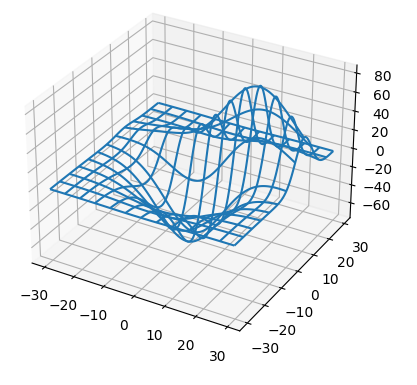
위 그림이 익숙한 분들이 많으실텐데, Matplotlib이 가지고 있는 3D 예제 데이터입니다.
mpl_toolkits.mplot3d.axes3d모듈의get_test_data()명령으로 불러올 수 있습니다.매개변수로 float을 받습니다. 정밀도를 나타내며 숫자가 작을수록 정밀합니다.
이상하게도 공식 홈페이지에 누락되어 있습니다.
3D Plot 공식 예제에서는 보통 0.5를 넣습니다.
1
2
3
4
5
6
7from mpl_toolkits.mplot3d.axes3d import get_test_data
X, Y, Z = get_test_data(0.5)
print(f"X.shape={X.shape}")
print(f"Y.shape={Y.shape}")
print(f"Z.shape={Z.shape}")실행 결과 : meshgrid형식의 12 x 12 데이터가 생성됩니다.
1
2
3X.shape=(12, 12)
Y.shape=(12, 12)
Z.shape=(12, 12)get_test_data()에 들어가는 숫자를 바꿔봅니다.숫자에 반비례하여 해상도를 바꾸는 효과가 있습니다.
1
2
3
4
5
6
7fig, axs = plt.subplots(ncols=3, figsize=(10, 4), subplot_kw={"projection":"3d"}, constrained_layout=True)
for ax, d in zip(axs, [1, 0.5, 0.1]):
X, Y, Z = get_test_data(d)
dim = X.shape[0]
ax.plot_wireframe(X, Y, Z)
ax.set_title(f"get_test_data({d}): {dim}x{dim}", fontsize="x-large", color="gray", fontweight="bold")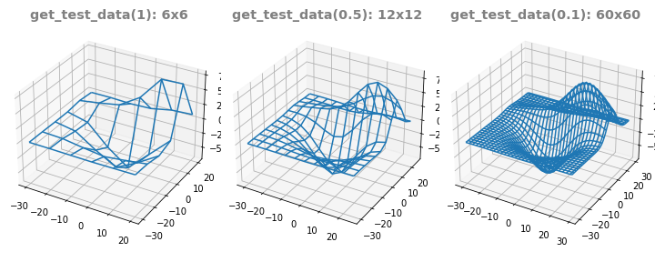
1.2. 이번 예제 데이터
- 그러나 이 글에서 우리는 저 예제 데이터를 사용하지 않을 것입니다.
- 기본 예제 데이터를 사용한 그림을 보고 싶으시면 공식 홈페이지를 보시기 바랍니다.
- 이 글에서는 제가 현업에서 얻은 예제 데이터 두 가지를 사용하겠습니다.
- 보안을 위해 column name은 제거했습니다.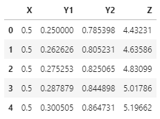
1
2data1 = pd.read_csv("data1.csv")
data1.head()
1 | data2 = pd.read_csv("data2.csv") |
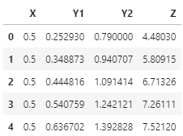
- data1과 data2에는 Y1과 Y2가 있습니다.
- data1은 X, Y1을 독립변수로 Y2과 Z를 얻은 것이고
- data2는 X, Y2를 독립변수로 Y1과 Z를 얻은 것입니다.
- 다시 말해 data1은 X와 Y1이, data2는 X와 Y2가 직교좌표계에 놓여 있습니다.
- 그리고 무의미한 데이터는 삭제되어 있습니다.
2. 2D Visualization
- 3D 데이터는 2D 이미지로 표현할 수 있습니다.
- 여러가지 방식을 사용합니다.
2.1. ax.scatter()
가장 기본적인 scatter plot을 사용합니다.
color로 Z를 사용하고 inferno colormap으로 데이터를 표기합니다.
1
2
3
4
5
6
7
8fig, axs = plt.subplots(ncols=2, figsize=(8, 4), constrained_layout=True)
fontlabel = {"fontsize":"large", "color":"gray", "fontweight":"bold"}
for ax, data in zip(axs, [data1, data2]):
ydata = "Y1" if data is data1 else "Y2"
ax.scatter(data["X"], data[ydata], c=data["Z"], cmap="inferno", s=10)
ax.set_xlabel("X", fontdict=fontlabel)
ax.set_ylabel(ydata, fontdict=fontlabel)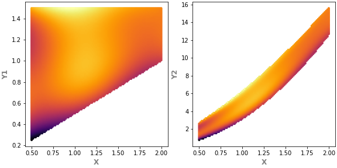
왼쪽 X vs Y1은 사다리꼴 모양,
오른쪽 X vs Y2는 휘어진 활 모양입니다.
scatter plot은 그려보기 가장 좋지만 데이터 사이 거리가 멀면 듬성듬성 구멍이 보일 수도 있습니다.
2.2. ax.imshow()
xy 평면에 놓인 데이터는 이미지처럼 다룰 수 있습니다.
ax.imshow()명령을 쓰려면 pandas의pivot_table명령을 이용해 데이터 형태를 바꾸어야 합니다.가로에 X 데이터를, 세로에 Y 데이터를 놓기 위해 X를 column, Y를 index로 지정합니다.
1
data1.pivot_table("Z", "Y1", "X")
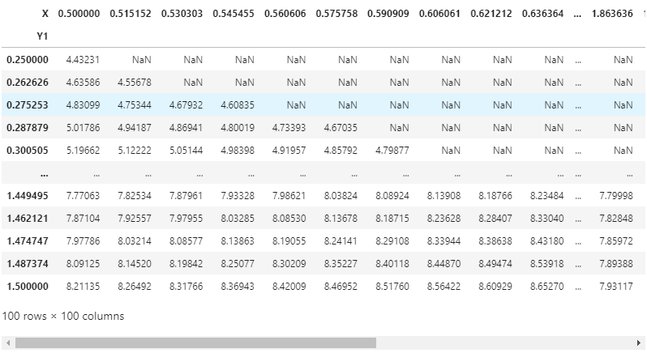
numerical data인 X와 Y를 categorical처럼 사용합니다.
데이터가 직교하지 않는 경우 매우 많은 구멍이 뚫립니다.
(ex. data1에서 X와 Y2로pivot_table()을 하는 경우)X, Y, Z 컬럼이 따로 있는 방식을 long format,
가로와 세로에 X와 Y가 놓이고 Z가 행렬처럼 놓이는 방식을 wide format이라고 합니다.
long format을 입력받는 명령이 있고, wide format을 입력받는 명령이 있습니다.
- 데이터를 이미지인양 표현합니다.
- 가로와 세로축이 index이기 때문에 extent매개변수로 실제 값과 매핑을 시켜야 합니다.
- 이 작업이 없으면 값이 아니라 index로 출력됩니다.
- 그리고 하나 더, 이미지는 다른 plot과 달리 y값이 위에서부터 아래로 작아집니다.
ax.invert_yaxis()를 해서 상하를 뒤집어야 합니다.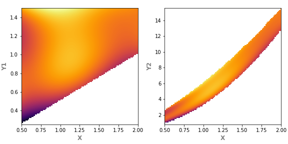1
2
3
4
5
6
7
8
9
10
11
12fig, axs = plt.subplots(ncols=2, figsize=(8, 4), constrained_layout=True)
fontlabel = {"fontsize":"large", "color":"gray", "fontweight":"bold"}
for ax, data in zip(axs, [data1, data2]):
ydata = "Y1" if data is data1 else "Y2"
ax.imshow(data.pivot_table("Z", ydata, "X"), cmap="inferno",
extent=[data["X"].min(), data["X"].max(), # 가로에 X 데이터
data[ydata].max(), data[ydata].min()]) # 세로에 Y 데이터
ax.invert_yaxis() # 그림 뒤집기
ax.set_aspect((data["X"].max() - data["X"].min())/(data[ydata].max() - data[ydata].min()))
ax.set_xlabel("X", fontdict=fontlabel)
ax.set_ylabel(ydata, fontdict=fontlabel)
2.3. ax.pcolor(), ax.pcolormesh(), ax.pcolorfast()
matplotlib: Difference between pcolor() and pcolormesh()
matplotlib.axes.Axes.pcolorfast
- 이미지처럼 출력할 수 있는 명령은 여러 가지가 있습니다.
ax.pcolor(),ax.pcolormesh(),ax.pcolorfast()가 그들입니다.ax.imshow()는 pixel의 가로세로 길이가 같아야 하지만 이들은 그렇지 않습니다.
ax.pcolor()는 PolyCollection을 return하고ax.pcolormesh()는 QuadMesh를 return합니다.ax.pcolormesh()가 빠르고 Gouraud shading을 지원하지만ax.pcolor()는 masked array를 지원합니다.ax.pcolorfast()는 Agg backend를 이용해ax.pcolor()를 지원하는 실험적인 기능입니다.
예제 코드는
ax.pcolor()만 사용합니다.실행해보면 아시겠지만 다른 명령도 결과가 똑같습니다.
1
2
3
4
5
6
7
8fig, axs = plt.subplots(ncols=2, figsize=(8, 4), constrained_layout=True)
fontlabel = {"fontsize":"large", "color":"gray", "fontweight":"bold"}
for ax, data in zip(axs, [data1, data2]):
ydata = "Y1" if data is data1 else "Y2"
ax.pcolor(data.pivot_table("Z", ydata, "X"), cmap="inferno")
ax.set_xlabel("X (index)", fontdict=fontlabel)
ax.set_ylabel(ydata + " (index)", fontdict=fontlabel)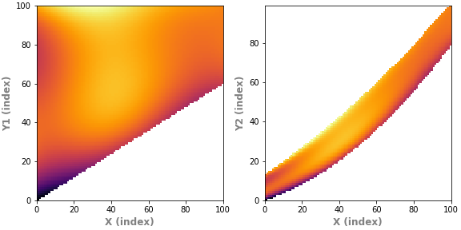
X, Y 좌표가 실제 데이터가 아니라 index입니다.
index를 좌표로 바꿉니다.
1
2
3
4
5
6
7
8
9
10
11
12
13
14
15
16
17
18
19
20
21
22fig, axs = plt.subplots(ncols=2, figsize=(8, 4), constrained_layout=True)
fontlabel = {"fontsize":"large", "color":"gray", "fontweight":"bold"}
for ax, data in zip(axs, [data1, data2]):
ydata = "Y1" if data is data1 else "Y2"
data_pt = data.pivot_table("Z", ydata, "X")
ax.pcolor(data_pt, cmap="inferno")
ax.set_xlabel("X", fontdict=fontlabel)
ax.set_ylabel(ydata, fontdict=fontlabel)
# index 중에서 그림에 표시된 범위와 전체 데이터 범위를 넘지 않는 것들 선택
xticks = [x for x in ax.get_xticks()
if (ax.get_xbound()[0] <= x <= ax.get_xbound()[1]) # 그림 표시 범위 안쪽
and x < len(data_pt.columns)] # 전체 데이터 범위 안쪽
ax.set_xticks(xticks)
ax.set_xticklabels([f"{data_pt.columns[int(x)]:.3f}" for x in xticks]) # 문자열 포맷 지정
yticks = [y for y in ax.get_yticks()
if (ax.get_ybound()[0] <= y <= ax.get_ybound()[1])
and y < len(data_pt.index)]
ax.set_yticks(yticks)
ax.set_yticklabels([f"{data_pt.index[int(y)]:.3f}" for y in yticks])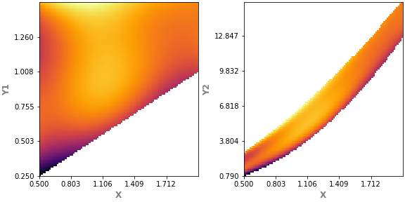
이런 식으로 해당 index의 좌표를 억지로 찾아 넣을 수는 있으나 자연스럽지 못합니다.
pcolor 시리즈는 다른 용처를 찾아봅시다. 여긴 아닙니다.
2.4. ax.contour
Z 데이터를 등고선으로 표기합니다.
기상도나 지형도에서 많이 본 형식이기 때문에 데이터 전달력이 좋습니다.
ax.imshow처럼 extent 매개변수를 사용할 수 있어 실제 좌표로 표현이 가능합니다.1
2
3
4
5
6
7
8
9
10
11fig, axs = plt.subplots(ncols=2, figsize=(8, 4), constrained_layout=True)
fontlabel = {"fontsize":"large", "color":"gray", "fontweight":"bold"}
for ax, data in zip(axs, [data1, data2]):
ydata = "Y1" if data is data1 else "Y2"
ax.contour(data.pivot_table("Z", ydata, "X"), # wide format 데이터 활용
levels=25, cmap="inferno", # 등고선 갯수와 colormap 지정
# extent 매개변수 적용 : x축과 y축에 실제 데이터값 매핑
extent=[data["X"].min(), data["X"].max(), data[ydata].min(), data[ydata].max()])
ax.set_xlabel("X", fontdict=fontlabel)
ax.set_ylabel(ydata, fontdict=fontlabel)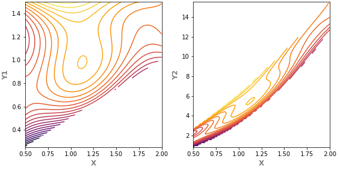
등고선에 데이터 값을 표기해서 정확한 값을 전달하는 것이 가능합니다.
데이터 값이 들어가려면 등고선의 수를 좀 줄이는 편이 좋습니다.
- 글자가 놓이는 부분의 등고선을 생략하려면 매개변수로
inline=True를 넣고, - 글자 좌우 여백을 조정하고 싶으면
inline_spacing을 조절합니다. - 매개변수로 상당히 많은 세부사항을 조정할 수 있습니다.
- 자세한 내용은 공식 홈페이지의
matplotlib.contour.ContourLabeler.clabel을 참고합니다.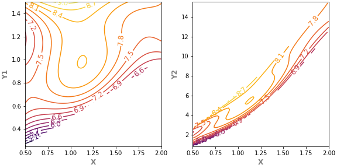1
2
3
4
5
6
7
8
9
10
11fig, axs = plt.subplots(ncols=2, figsize=(8, 4), constrained_layout=True)
fontlabel = {"fontsize":"large", "color":"gray", "fontweight":"bold"}
for ax, data in zip(axs, [data1, data2]):
ydata = "Y1" if data is data1 else "Y2"
cs = ax.contour(data.pivot_table("Z", ydata, "X"), # contour label 삽입을 위해 객체(cs)로 받음.
levels=15, cmap="inferno",
extent=[data["X"].min(), data["X"].max(), data[ydata].min(), data[ydata].max()])
ax.clabel(cs, inline=True, inline_spacing=0, fontsize=12) # contour label 설정
ax.set_xlabel("X", fontdict=fontlabel)
ax.set_ylabel(ydata, fontdict=fontlabel)
2.5. ax.contourf()
- 등고선 영역에 색칠을 합니다.
ax.imshow()를 단계별로 quantize 했다고도 볼 수 있습니다.- 자체적으로도
ax.clabel()로 등고선 레이블을 붙일 수 있지만ax.contour()과 협력하면 더 좋습니다.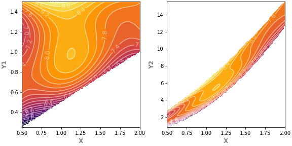1
2
3
4
5
6
7
8
9
10
11
12
13
14fig, axs = plt.subplots(ncols=2, figsize=(8, 4), constrained_layout=True)
fontlabel = {"fontsize":"large", "color":"gray", "fontweight":"bold"}
for ax, data in zip(axs, [data1, data2]):
ydata = "Y1" if data is data1 else "Y2"
ax.contourf(data.pivot_table("Z", ydata, "X"), # 등고선 사이 채색
levels=25, cmap="inferno",
extent=[data["X"].min(), data["X"].max(), data[ydata].min(), data[ydata].max()])
cs = ax.contour(data.pivot_table("Z", ydata, "X"), # 등고선
levels=25, colors="w", alpha=0.5,
extent=[data["X"].min(), data["X"].max(), data[ydata].min(), data[ydata].max()])
ax.clabel(cs, inline=True, inline_spacing=0, fontsize=12) # 등고선 레이블
ax.set_xlabel("X", fontdict=fontlabel)
ax.set_ylabel(ydata, fontdict=fontlabel)
2.6. ax.triplot()
입력받은 데이터를 삼각형으로 잘게 자릅니다.
Delaunay triangulation이라고 하는데, 유한요소해석(finite element analysis)을 배운 분들께는 매우 익숙할 단어입니다.
지금 데이터가 너무 빼곡하기 때문에 일부만 샘플링을 해서 데이터 수를 줄입니다.
x의 최대와 최소, y의 최대와 최소는 남겨서 데이터 범위는 유지합니다.
1
2
3
4
5
6
7
8data1_ll = data1.sort_values(["X", "Y1"], ascending=[True, True]).index[0]
data1_ul = data1.sort_values(["X", "Y1"], ascending=[True, False]).index[0]
data1_lr = data1.sort_values(["X", "Y1"], ascending=[False, True]).index[0]
data1_ur = data1.sort_values(["X", "Y1"], ascending=[False, False]).index[0]
data1_s = pd.concat([data1.loc[[data1_ll, data1_ul, data1_lr, data1_ur]], data1.sample(n=400)], axis=0)
data1_s.reset_index(inplace=True, drop=True)
data1_s.head()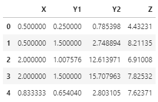
data2에도 같은 처리를 합니다.
data2는 영역이 좁은만큼 데이터 수를 data1의 2분의 1로 줄입니다.
1
2
3
4
5
6
7
8data2_ll = data2.sort_values(["X", "Y2"], ascending=[True, True]).index[0]
data2_ul = data2.sort_values(["X", "Y2"], ascending=[True, False]).index[0]
data2_lr = data2.sort_values(["X", "Y2"], ascending=[False, True]).index[0]
data2_ur = data2.sort_values(["X", "Y2"], ascending=[False, False]).index[0]
data2_s = pd.concat([data2.loc[[data2_ll, data2_ul, data2_lr, data2_ur]], data2.sample(n=200)], axis=0)
data2_s.reset_index(inplace=True, drop=True)
data2_s.head()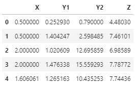
줄어든 데이터로 triplot을 그립니다.
pivot_table을 할 필요가 없습니다.
1
2
3
4
5
6
7
8fig, axs = plt.subplots(ncols=2, figsize=(8, 4), constrained_layout=True)
fontlabel = {"fontsize":"large", "color":"gray", "fontweight":"bold"}
for ax, data in zip(axs, [data1_s, data2_s]):
ydata = "Y1" if data is data1_s else "Y2"
ax.triplot(data["X"], data[ydata], lw=0.1) # ax.triplot
ax.set_xlabel("X", fontdict=fontlabel)
ax.set_ylabel(ydata, fontdict=fontlabel)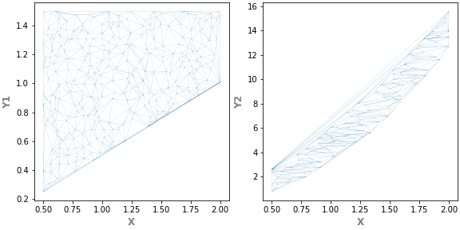
삼각형 mesh 구조가 생성되었습니다.
다 좋은데, 오른쪽 그림을 보면 데이터 위쪽 활처럼 휜 곳이 직선으로 메워졌습니다.
all-convex 도형은 괜찮은데 안쪽으로 들어간(concave) 구조에 사용하기엔 적절치 않습니다.
2.7. ax.tricontour()
ax.contour()와 비슷한 기능입니다.- 차이가 있다면 삼각형으로 쪼갠 뒤에 그립니다.
- 데이터의 정밀도를 높일 수 있는 방법입니다.
- 데이터 구조는 보았으니 앞에서 성기게 만든 데이터보다 원 데이터로 작업합니다.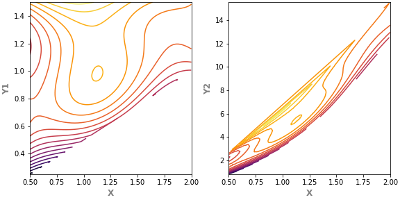
1
2
3
4
5
6
7
8fig, axs = plt.subplots(ncols=2, figsize=(8, 4), constrained_layout=True)
fontlabel = {"fontsize":"large", "color":"gray", "fontweight":"bold"}
for ax, data in zip(axs, [data1, data2]):
ydata = "Y1" if data is data1 else "Y2"
ax.tricontour(data["X"], data[ydata], data["Z"], levels=15, cmap="inferno")
ax.set_xlabel("X", fontdict=fontlabel)
ax.set_ylabel(ydata, fontdict=fontlabel)
2.8. ax.tricontourf()
ax.contourf()에 대응되는 기능입니다.1
2
3
4
5
6
7
8fig, axs = plt.subplots(ncols=2, figsize=(8, 4), constrained_layout=True)
fontlabel = {"fontsize":"large", "color":"gray", "fontweight":"bold"}
for ax, data in zip(axs, [data1, data2]):
ydata = "Y1" if data is data1 else "Y2"
ax.tricontourf(data["X"], data[ydata], data["Z"], levels=15, cmap="inferno")
ax.set_xlabel("X", fontdict=fontlabel)
ax.set_ylabel(ydata, fontdict=fontlabel)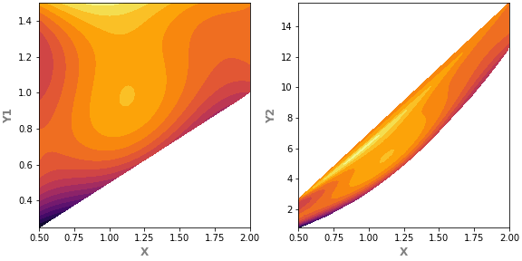
Y2가 포함된 오른쪽 그림에서 자꾸 원하지 않는 concave 영역이 나타납니다.
mask 매개변수를 사용해서 이런 부분을 제거할 수 있을 것으로 보입니다.
미래의 나에게 숙제로 맡기겠습니다.